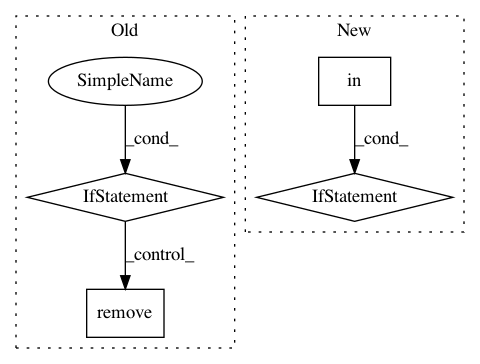

73f93c38591b0099682d82e790aec13fcd13a6f5,scipy/integrate/quadpack.py,_NQuad,_int,#_NQuad#,632
Before Change
opt = self.opts[ind](*args[0:-1])
try:
for point in opt["points"]:
if point < range_[0] or point > range_[1]:
opt["points"].remove(point)
except(KeyError):
pass
if self.ranges[ind] is self.ranges[0]:
newfunc = self.func
After Change
// keep only points that are within the specified range.
// Just to be safer, do this without modifying the original dict.
opt = dict(opt)
if "points" in opt:
opt["points"] = [x for x in opt["points"] if low <= x <= high]
if self.ranges[ind] is self.ranges[0]:
newfunc = self.func
newargs = args[0:-1]
else:
In pattern: SUPERPATTERN
Frequency: 3
Non-data size: 4
Instances
Project Name: scipy/scipy
Commit Name: 73f93c38591b0099682d82e790aec13fcd13a6f5
Time: 2013-08-14
Author: argriffi@ncsu.edu
File Name: scipy/integrate/quadpack.py
Class Name: _NQuad
Method Name: _int
Project Name: biocore/scikit-bio
Commit Name: daf661c3edd949f8ac2cd70e4a725d9a055cc0c3
Time: 2016-06-27
Author: mcdonadt@colorado.edu
File Name: skbio/tree/_tree.py
Class Name: TreeNode
Method Name: shear
Project Name: mil-tokyo/webdnn
Commit Name: 4bdd5d8384866805199900edc6f948d144c5fb08
Time: 2017-11-13
Author: y.kikura@gmail.com
File Name: src/graph_transpiler/webdnn/optimizer/sub_rules/remove_no_effect_operator.py
Class Name: RemoveReinterpretAxis
Method Name: optimize_operator